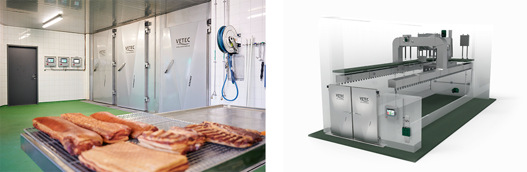

加工
市場ニーズに応える加工技術で、商品の魅力を引き出します。主に精肉の加工技術などは、市場ニーズと理想の状況を認識し、最先端の技術力とノウハウによる各種製造方法をご提案します。多様化する食生活にも対応し、売り上げや注目度のアップも視野に入れた商品の可能性を追求します。
カット・成形

TVI ポーションカッター
不定形品を同じ厚み・重さ・形でカット。
詳細を見る →
[ミートプレス機 製品イメージ]
ミートプレス機
不定形ブロック肉の成形加工に。
準備中
充填・ライン


カッター／グラインダー／ミキサー


ユニバーサルマシン／ミクロカットマシン


マッサージ装置／インジェクター装置


ベーカリー

FRITSCH リバースシーター
ROLLFIX prime
パイシート生地工程を効率化し、生産能力アップ。
詳細を見る →

FRITSCH ペストリー成形機
MULTIFLEX
生地のシートづくりに欠かせない、汎用性の高い自動ライン。
詳細を見る →
[ベーカリーオーブン 製品イメージ]
ベーカリーオーブン
PICCOLO／ATLAS／HPシリーズ
パン・お菓子もこれ一台で。
準備中
熱処理・解凍

スモークハウス
優れたエアーマネジメントによる均一な仕上がり。
準備中
[解凍機 製品イメージ]
解凍機
均一な解凍を実現し、製品庫としても充実。
準備中